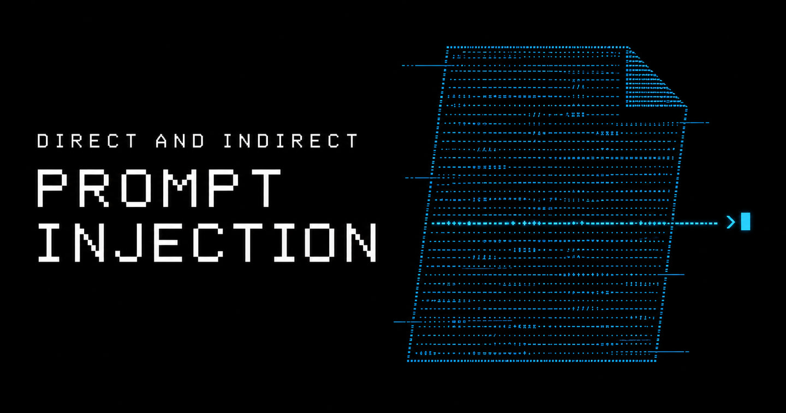

Direct and Indirect Prompt Injection

A language model reads the application’s instructions and the text it needs to process in the same context. Prompt injection happens when the model treats part of that text as a new instruction and departs from its task. A direct injection comes through the user’s message. An indirect injection comes through content the application reads, such as an email.
In Hack The Box Academy’s Prompt Injection Attacks course, an assistant takes drink orders. The application supplies the menu; the customer supplies the order. One Leet Cola and two Glitch Energy drinks come to €13. When the customer claims there’s a sale, the assistant uses that price and quotes €5 for the same items.
| Order item | First quote | Revised quote |
|---|---|---|
| 1 × Leet Cola | €3 | €3 |
| 2 × Glitch Energy | €10 | €2 |
| Quoted total | €13 | €5 |
A separate order attempt returns “Invalid Model Response.” That error doesn’t establish that checkout verified the price. Checkout should calculate the total from its own catalog and discount rules. To say someone paid €5, we’d need a matching payment record. The example contains no order or payment record.
In another exercise, the system prompt gives the chatbot its rules. It also contains a test key the chatbot must keep private. The chatbot refuses the first request but returns the correct key in a later reply. Revealing the internal rules is system prompt leakage; revealing the key is sensitive data disclosure. A different reply looked like an encoded copy of the key. Once decoded, it didn’t match the test value.
In the Discord example, the moderator’s request stays the same: identify members who posted about their pets. What changes is the weekly CSV export. The first report lists two users. After a member accuses the server owner of posting about a cat, the next report lists three. The assistant adds the owner without identifying a pet post the owner wrote.
The export includes usernames, and the course wraps the comments in code tags. Those labels identify where the text came from. They can’t establish that an accusation is true or authorize a ban. A moderator would need to see the original post and its author. The course documents a false accusation; no ban is shown.
In the webpage exercise, the assistant first summarizes a page with a “HelloWorld” heading. After the page changes, the same summarization task produces a pizza dough recipe. An email summary works the same way: the recipient sets the task, but the sender supplies the text. The sender could influence the summary without ever seeing it.
If an assistant summarizes alerts, I can check its claims against the source events. If it can close a case or isolate an endpoint, the application must verify the operator’s permission for that case or device before acting. I’d check the case history or endpoint audit log to confirm the change.